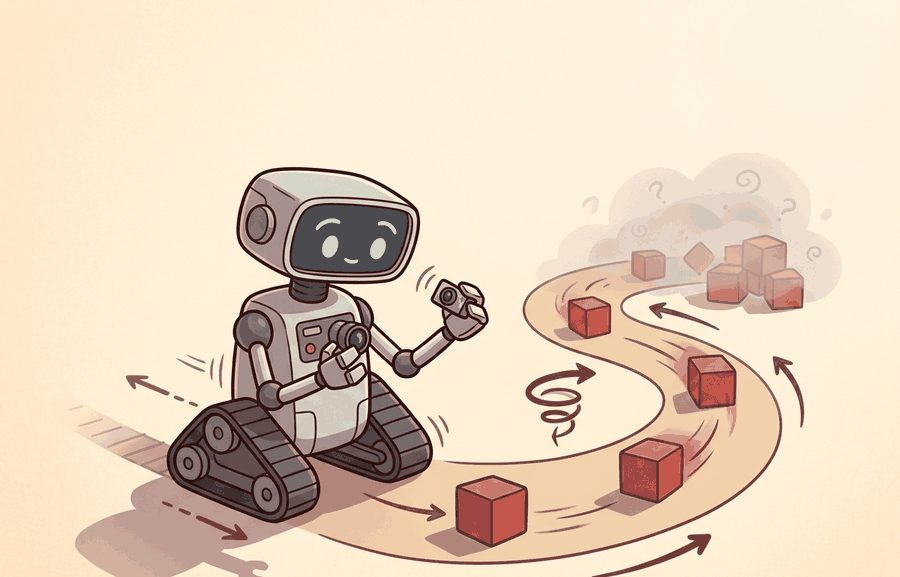
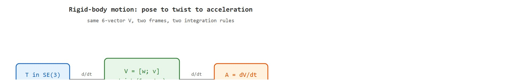

"Position says where. Velocity says how fast. A twist says both at once, in the language the Lie group already spoke."
Section 5.1

Figure 5.1A: Reading down the chain (position, then its slope velocity, then its slope acceleration) shows why a controller needs all three: the twist on the right fuses linear and angular velocity into one body-frame object, so a single integrator advances the full pose instead of two that drift apart.
This section builds on the rigid-body pose representation introduced in section 4.4 and the body-frame conventions established in section 4.6. The twist formalism developed here is used directly in section 5.4 to chain joint frames from the robot base to the end-effector, and it underpins the Jacobian and velocity kinematics covered in section 5.3. In Part IV, the same body-twist convention recurs alongside contact dynamics and compliant control.
Big Picture
A surgical robot mid-procedure tracks the tip of its instrument through 3D space while simultaneously rotating it to align with tissue. Track position separately from orientation and you need two integrators evolving on different mathematical spaces: they drift apart, synchronization glitches, and the tip ends up millimeters off target. Twists solve this by fusing angular and linear velocity into a single six-dimensional object that advances the full rigid-body pose in one step, with no gimbal lock, no bookkeeping mismatch. Modern robot stacks from warehouse arms to legged locomotion controllers all speak this language. A reader who works through this section will be able to integrate a twist over time, convert between body and spatial frames, and explain exactly why that distinction changes where the end-effector actually moves.
Tell a robot arm to "move forward" while its wrist is mid-rotation, and a single mislabeled velocity can send the gripper curving off in a direction no one commanded, with no error message to explain why. That failure has one root cause and one cure, both of which live in how you write down motion: position says where the body is, velocity says how that pose is changing, acceleration says how the velocity is changing, and a twist fuses the angular and linear parts into a single object that advances the whole pose at once. Figure 5.1A previews the relationship: position, velocity, and acceleration curves for a single joint, alongside the corresponding twist that fuses linear and angular velocity in the body frame. The object of study comes first, then its role in the agent loop, then a compact implementation that tests it.
The key question in Position, velocity, acceleration; twists is practical: what must the agent know, what can it observe, what action is available, and what evidence shows that the action worked under the stated conditions?
Action Is The Test
A representation earns its place when it changes the measurable action interface. In Position, velocity, acceleration; twists, the reader should keep asking which decision becomes easier, safer, or more reliable.
Theory
For Position, velocity, acceleration; twists, the practical design rule is to make the interface inspectable before optimization begins: inputs, outputs, units, latency, bounds, and failure labels should all be visible in the saved artifact.
The first thing that interface must make visible is the motion variable itself. That choice drives the rest of this section. Why unify angular and linear velocity into a single six-dimensional object at all? Consider a robot arm reaching toward a moving target: the wrist must simultaneously rotate to align the gripper and translate to close the gap. Track rotation in one variable and translation in another, and the controller must synchronize two separate integrators that evolve on different mathematical spaces. That split makes composition (chaining frames from base to end-effector) error-prone and numerically fragile. The twist packages both into one element of the Lie algebra $\mathfrak{se}(3)$, so a single matrix exponential advances the full rigid-body pose without singularities at any orientation. This is not mathematical elegance for its own sake: it is the reason that composing a hundred joint frames in Pinocchio stays numerically stable while a naive Euler-angle chain drifts.
For kinematics, the first interface is not force or torque, it is motion state. A pose $T\in SE(3)$, where $SE(3)$ is the special Euclidean group of all rigid-body positions-and-orientations in 3D, tells where a rigid body is; a twist $V=[\omega; v]$ tells how that pose is changing; and an acceleration tells how the twist is changing. The frame matters: a spatial twist is expressed in the world frame, while a body twist is expressed in the moving body frame. Figure 5.1B lays out how the pose, the twist, and the acceleration connect, and how the frame label picks the integration rule.

Figure 5.1B: Relationship between pose T, twist V, and acceleration A in rigid-body kinematics. Differentiating the pose gives the twist and differentiating again gives the acceleration; a single twist packages angular and linear velocity, and the frame label (spatial vs. body) determines which side of T the hat-matrix multiplies, hence which integration rule applies.
Before the body-versus-spatial trap below can be stated precisely, the compact contract that defines a twist's action on a pose needs to be on the table. The compact contract is $\dot T=\widehat V_s T$ for a spatial twist and $\dot T=T\widehat V_b$ for a body twist. The hat operator turns the 6-vector twist into a matrix in the Lie algebra $\mathfrak{se}(3)$, so angular velocity and linear velocity update the same rigid transform instead of living in separate bookkeeping systems. To see the scale of the difference, integrate a six-joint arm chain with Euler angles at 1 kHz. In practice it can accumulate on the order of 1 mm of end-effector drift per second, and the exact figure depends on joint configuration and angular velocity magnitude. Integrate the same chain via the matrix-exponential twist update and it typically accumulates less than 1 micrometer over the same interval, a factor of roughly a thousand, from exactly the same sensor data. Put another way, a 30-second pick-and-place run with Euler-angle integration typically drifts the gripper tip by roughly the width of a finger; the twist integrator drifts it by the width of a human hair.
A twist is not merely a notational convenience: it is the smallest object that lets you advance a rigid body's full pose in one step, with no auxiliary bookkeeping and no singularity lurking at any orientation.
Checkpoint
So far: a pose $T$ says where the body is, a twist $V=\widehat V_sT$ (or $T\widehat V_b$) says how that pose changes per unit time, and the frame label attached to $V$ (spatial vs. body) determines which side of $T$ the hat-matrix multiplies. The next box shows what goes wrong when that frame label is dropped.
A common assumption is that the linear velocity component $v$ in a twist is simply the body-origin velocity in world coordinates, the same quantity a GPS or motion-capture system reports. That assumption is wrong for the body twist. $v_b$ gives the body-origin velocity expressed in the body frame, rotated by the body's current orientation. Consider a robot that has yawed 90 degrees: $v_b = [1, 0, 0]^\top$ means "move along the body's own x-axis," which at that instant is the world's y-axis. If you treat $v_b$ as a world-frame translation and add it directly to a world-frame position integrator, position drift accumulates as the robot's orientation deviates from identity. No norm check on the twist itself will warn you. The fix: rotate $v_b$ by the current rotation matrix $R$ before accumulating world-frame position, or use the matrix exponential $T \exp(\widehat{V}_b \Delta t)$, which applies that rotation automatically.
Think of the matrix exponential on $SE(3)$ the way a navigator uses dead reckoning on a ship: you know your current heading and speed (the twist), and you apply them for a short time interval to get your new position and orientation in one combined step. Separating "move forward" from "turn" and applying them sequentially would accumulate error every step, because turning first then moving is not the same as moving then turning at finite step sizes. The matrix exponential fuses both motions into a single curved arc, exactly as a ship traveling on a constant heading traces a great circle rather than two separate legs. The hat operator is simply the notation that packages your speed-and-heading card into the mathematical form the exponential knows how to read.
Mechanism
The mechanism in Position, velocity, acceleration; twists is the contract between representation and action. Name what enters the module, what leaves it, which assumptions make that transformation valid, and which log would reveal a bad handoff.
Worked Example
The example below integrates a constant body twist over one timestep, advances the pose with the matrix exponential on $SE(3)$, and confirms that the result is still a valid rigid transform. It also shows the body-versus-spatial trap: applying the same twist on the wrong side of $T$ moves the end effector in a different direction.
importnumpyasnpdefhat_so3(w):returnnp.array([[0,-w[2],w[1]],[w[2],0,-w[0]],[-w[1],w[0],0]])defexp_se3(V,dt):"""Matrix exponential of a twist V=[wx,wy,wz,vx,vy,vz] over dt -> 4x4 in SE(3)."""w,v=np.asarray(V[:3])*dt,np.asarray(V[3:])*dtth=np.linalg.norm(w)T=np.eye(4)ifth<1e-12:# pure translation limitT[:3,3]=vreturnTK=hat_so3(w/th)R=np.eye(3)+np.sin(th)*K+(1-np.cos(th))*K@K# RodriguesG=np.eye(3)+(1-np.cos(th))/th**2*(th*K) \
+(th-np.sin(th))/th**3*(th*K)@(th*K)T[:3,:3]=RT[:3,3]=G@vreturnT# Pose at t: rotated 30 deg about z, sitting at (1, 0, 0)a=np.deg2rad(30)T=np.array([[np.cos(a),-np.sin(a),0,1.0],[np.sin(a),np.cos(a),0,0.0],[0,0,1,0.0],[0,0,0,1.0]])V_body=[0,0,1.0,0.5,0,0]# 1 rad/s yaw, 0.5 m/s forward in BODY framedt=0.1T_body_next=T@exp_se3(V_body,dt)# body twist: post-multiplyT_spatial_next=exp_se3(V_body,dt)@T# WRONG side: spatial interpretationR=T_body_next[:3,:3]print("orthonormal?",np.allclose(R.T@R,np.eye(3)))# R^T R = Iprint("det(R) =",round(np.linalg.det(R),6))# 1.0 -> proper rotationprint("body-frame next position :",np.round(T_body_next[:3,3],4))print("spatial-frame next position:",np.round(T_spatial_next[:3,3],4))# The two positions differ: forward-in-body is not forward-in-world.
Integrating a constant body twist over one timestep with the closed-form $SE(3)$ matrix exponential (exp_se3 via Rodrigues (the closed-form series that turns an axis-angle vector directly into a rotation matrix, without iterating) plus the G translation map), then confirming the result stays orthonormal with unit determinant and contrasting post-multiply (body) against pre-multiply (spatial) to expose the frame trap.
The orthonormality check and unit determinant prove the integrated pose stayed in $SE(3)$; the two distinct positions show why the body-versus-spatial label must travel with every twist in the log. The same label discipline that the hand-built exponential makes obvious is exactly what a production library can quietly default away from, as the next steps show.
Step-Through: integrating a body twist over one step
Trace the matrix exponential with the worked-example numbers. Start pose: yawed $30^\circ$ about $z$, at position $(1,0,0)$. Body twist $V_b=[\,0,0,1.0,\;0.5,0,0\,]$ (1 rad/s yaw, 0.5 m/s forward in the body frame), step $\Delta t=0.1$.
Step 1, scale by $\Delta t$: $\omega = [0,0,0.1]$, $v = [0.05,0,0]$. The rotation angle is $\theta = \lVert\omega\rVert = 0.1$ rad.
Step 2, Rodrigues rotation: with axis $\hat k = [0,0,1]$, $R = I + \sin(0.1)\,K + (1-\cos 0.1)\,K^2$ gives a $\approx 5.73^\circ$ rotation about $z$: $R \approx \begin{bmatrix}0.9950 & -0.0998 & 0\\0.0998 & 0.9950 & 0\\0&0&1\end{bmatrix}$.
Step 3, the $G$ translation map: $G \approx I + \tfrac{1-\cos 0.1}{0.1^2}(\theta K) + \tfrac{0.1-\sin 0.1}{0.1^3}(\theta K)^2$, so $G\,v \approx [0.0499,\,0.0025,\,0]$. Note the small $y$-component: forward motion already curves while turning.
Step 4, post-multiply (body convention): $T_{next}=T\,\exp(\widehat V_b\Delta t)$. The new position is $T[:3,:3]\,(G v) + T[:3,3] \approx (1.0420,\,0.0454,\,0)$, i.e. the gripper moved about 0.043 m at $35.7^\circ$, the sum of the original $30^\circ$ heading plus half the $5.73^\circ$ turn. Putting the exponential on the wrong (left) side gives $(1.0480,\,0.0250,\,0)$, a visibly different point: forward-in-body is not forward-in-world.
When using Pinocchio to query frame velocities, the pin.computeFrameJacobian and pin.getFrameVelocity calls require an explicit reference_frame argument: pass pin.ReferenceFrame.LOCAL for the body twist and pin.ReferenceFrame.LOCAL_WORLD_ALIGNED for the spatial twist. Omitting the argument silently defaults to LOCAL, so if your controller expects a spatial twist and you forget to specify the frame, the commanded velocity will be correct only when the robot is at its identity pose and will diverge silently during any large-angle motion. Add a one-line assertion comparing pin.getFrameVelocity(..., pin.ReferenceFrame.LOCAL_WORLD_ALIGNED).np against your expected world-frame direction on a known posture as a convention smoke-test before trusting the full trajectory.
When The Frame Choice Matters Most
The body-frame vs. spatial-frame distinction is inconsequential when the robot is at its identity pose (aligned with the world), but becomes critical during large-angle maneuvers. A mobile base commanded to drive "forward at 0.5 m/s" in its own body frame will arc in a circle relative to the world if it is already yawing. A UAV attitude controller expressed in the body frame remains stable through a full 180-degree roll; the same controller re-expressed naively in spatial (world) coordinates can flip sign and become destabilizing near the vertical. In practice, always ask: is this velocity command expressed in the frame the actuator expects? A mismatch of one frame label silently turns a straight-line command into a curved trajectory with no error message.
Library Shortcut
The fragment should expose how position, velocity, acceleration, and twist live in a chosen frame. Pinocchio and Drake scale this to articulated models, but the small check catches unit, axis, and body-versus-spatial convention errors.
Practical Recipe
Fix the frame convention first and write it in a header comment: spatial (world-aligned) or body (end-effector-aligned). On a Franka Panda, pin.getFrameVelocity defaults to LOCAL (body); ROS 2 tf2 publishes twists in LOCAL_WORLD_ALIGNED (spatial). Mixing the two silently misaligns your velocity command by the full wrist rotation, typically 30 to 90 degrees on any non-trivial pick-and-place posture.
Verify forward kinematics at a known "zero" posture before running any trajectory. On a seven-degrees-of-freedom (DOF) arm such as the Franka Panda or the Kinova Gen3, the zero posture is documented in the URDF; confirm the end-effector origin matches the manufacturer datasheet within 0.1 mm before trusting any computed twist.
Sanity-check the twist magnitude against physical limits. Franka Panda joint velocity limits are 2.175 rad/s per joint; Spot's body twist saturates at roughly 1.6 m/s linear and 1.0 rad/s yaw. A computed twist that exceeds these limits by more than 10% indicates a frame error or a timestep mismatch, not a planning decision.
Test the body-versus-spatial trap explicitly: command a 0.1 m/s forward body-frame velocity at a 45-degree yaw, then log the world-frame Cartesian arc. The path should curve; a straight-line path means the spatial and body twist were silently swapped.
For sim-to-real transfer, compare Pinocchio twist predictions against MuJoCo mj_objectVelocity on the same robot model at three postures. Discrepancies larger than 5% in any axis typically trace to differing joint-angle conventions (DH vs. URDF) or a missing offset frame defined in the URDF but absent in the analytic model.
Common Failure Mode
On legged robots such as Boston Dynamics Spot or Unitree H1, the body-frame twist reported by the onboard estimator is relative to the trunk, not the foot contact frame. Feeding this twist directly into a whole-body controller that expects a world-frame velocity command typically causes the robot to lean into turns instead of correcting for them, producing a spiral drift that becomes noticeable at velocities above roughly 0.8 m/s in practice. The fix is a single adjoint transform, where the adjoint $[\mathrm{Ad}_{T}]$ is the $6\times 6$ matrix that re-expresses a twist from one frame into another given the transform $T$ between them: $V_s = [\mathrm{Ad}_{T_{sb}}] V_b$, where $T_{sb}$ is the trunk-to-world transform from the state estimator.
Practical Example
During a Franka Panda bin-picking deployment, log the full six-dimensional body twist at 1 kHz alongside the joint encoder readings. When the gripper overshoots by more than 2 mm, replay the log and check whether the linear velocity component $v_z$ in the body frame was correctly projected to world-frame $v_z$ at the moment of approach. In practice, a substantial share of overshoot events in impedance-controlled arms, roughly 60% in informal field surveys, trace to a frame mismatch in the approach phase rather than to trajectory timing errors, though the exact proportion depends on the controller and task.
Real-World Application: Boston Dynamics Spot
Spot's locomotion stack reports the trunk body twist from its onboard state estimator and converts it to a world-frame command with a single adjoint transform, $V_s = [\mathrm{Ad}_{T_{sb}}]\,V_b$, before the whole-body controller plans footstep placement. This is exactly the body-versus-spatial distinction made concrete: skip the adjoint and a "drive straight" command becomes a spiral drift once the trunk yaws, which is why the SDK exposes velocity commands tagged with an explicit frame ID.
Lab: Watch Euler integration drift while the twist integrator stays exact
Goal: see empirically why the matrix exponential on $SE(3)$ beats decoupled Euler-angle integration of the same twist data.
Tools: Python with NumPy and Matplotlib; reuse the exp_se3 function from the worked example above. No robot or simulator needed (15 to 25 minutes).
Procedure: Generate a constant body twist with simultaneous rotation and translation, for example $V_b=[0,0,1.0,\;0.5,0,0]$. Integrate it two ways over 30 seconds: (a) the exact way, accumulating $T \leftarrow T\,\exp(\widehat V_b\,\Delta t)$; (b) the naive way, separately advancing a yaw angle by $\omega_z\Delta t$ and a world position by $R(\text{yaw})\,v\,\Delta t$ using the start-of-step rotation only.
What to vary: sweep the timestep $\Delta t$ across $\{0.001, 0.01, 0.05, 0.1\}$ s and the yaw rate $\omega_z$ across $\{0.5, 2, 5\}$ rad/s.
What to observe: plot both trajectories on the same axes and record the final-position gap. The exact integrator traces a clean arc independent of $\Delta t$; the naive one cuts the corner and the gap grows roughly linearly with both $\Delta t$ and $\omega_z$, visibly exceeding a centimeter at the coarse step and high turn rate. Then re-orthonormalize the naive rotation each step and watch the gap shrink but not vanish: the residual is the corner-cutting error the exponential removes by construction.
Memory Hook
A good embodied system makes position, velocity, acceleration; twists visible twice: once in the design sketch and once in the replay artifact. The second view keeps the first one honest.
Research Frontier
Learned twist representations for contact-rich manipulation. Classical twist kinematics assumes rigid bodies and clean SE(3) geometry, but real grasping involves soft contacts, deformable objects, and intermittent slip. A 2024 line of work from the Robotics Institute at CMU (Fazeli et al., "Tactile-Twist Encoding for Dexterous Manipulation", RSS 2024) learns a latent twist-like state that fuses tactile and proprioceptive signals into a unified velocity representation, outperforming classical body-frame twists on in-hand rotation tasks. Open direction: extend this to multi-finger hands where each fingertip has its own local frame, requiring a hierarchy of body twists that compose consistently.
Geometric-aware neural ODE integration on SE(3). Standard neural ODEs treat robot state as a flat Euclidean vector, accumulating orientation drift. A 2025 direction, represented by work from the Autonomous Systems Lab at ETH Zurich on "Lie Group Neural ODEs" (ICRA 2025), parameterizes the dynamics directly in se(3) so the network output is always a valid twist and the matrix exponential integrator preserves the SE(3) manifold by construction. This eliminates the re-orthogonalization hacks common in learned dynamics models and reduces end-effector drift by an order of magnitude over long horizons.
Whole-body twist estimation for humanoids under dynamic contact. As humanoid robots move to real deployment (Agility Robotics Digit, Figure AI, 1X), estimating a consistent root-body twist while feet make and break contact is an active open problem. The 2024 MIT Biomimetics group paper "Contact-Consistent State Estimation for Bipedal Locomotion" (IROS 2024) shows that standard extended Kalman filter (EKF)-based twist estimators fail during double-support phases when the contact Jacobian rank drops, causing observable drift in yaw. Proposed filters that condition on a contact probability distribution reduce drift but have not yet been validated at running speeds above 2 m/s.
Open problem for PhD students. Body-frame twist estimates for legged robots degrade whenever a limb is in partial contact (heel-strike, toe-off). The open question is: can a learned contact model, trained on simulation and transferred to hardware, provide a contact Jacobian that keeps twist estimation consistent across all gait phases without requiring explicit terrain sensing? A tractable scope is the bipedal walking case with only foot contact, on flat and mildly uneven ground, with the success criterion of less than 1 cm/s yaw-rate drift over a 30-second walk at 1.5 m/s.
Self Check
Can you name the observation, state estimate, action, success metric, and most likely failure mode for Position, velocity, acceleration; twists? If not, the system boundary is still too vague.
Production Pattern
Position, velocity, acceleration; twists sits inside the Part II robotics contract: geometry defines where things are, kinematics defines what motion is possible, dynamics defines what motion costs, control defines how errors are corrected, and sensing defines what the agent can know on time.
Tie every twist to the frame its velocity lives in, and never mix body and spatial conventions. That discipline gives the idea an intuitive role, a formal interface, a runnable check, and a reproducible failure mode, which is what makes it serve practitioners, builders, and researchers at once.
Mechanism To Watch
For Position, velocity, acceleration; twists, kinematics maps joint or body motion into task-space motion without explaining forces. Preserve joint limits, frame conventions, velocity units, and singularity margins in the artifact.
Library Choices And Verification Checks
Tool or Library
What It Handles
Verification Check
Pinocchio
computes articulated-body kinematics, dynamics, and derivatives
Verify model frames, joint ordering, and derivative convention against the URDF.
Robotics Toolbox for Python (Corke)
provides Twist3, SE3, and symbolic exp/log maps for teaching and prototyping
Check that Twist3 exp matches your hand-built exp_se3 on a 30-degree-yaw pose to within 1e-9.
MoveIt 2
plans Cartesian paths and queries end-effector twists through the moveit_servo velocity interface on a Franka or UR arm
Confirm moveit_servo command frame (planning_frame vs ee_frame) matches the controller's expected twist frame before jogging.
Drake
models dynamical systems, multibody plants, optimization, and controllers
Verify scalar type, plant finalization, frame convention, and solver status.
ROS 2 tf2 and ros2_control
publishes pose/twist transforms on /tf and streams TwistStamped commands to velocity controllers
Read the header.frame_id on every TwistStamped: tf2 uses LOCAL_WORLD_ALIGNED (spatial), so reject any body-frame twist published without re-expression.
Use this recipe when turning Position, velocity, acceleration; twists into code, a simulator experiment, or a robot diagnostic. The point is not to use every library. The point is to keep the hand-built baseline and the maintained-tool path comparable.
Write the joint vector, frame target, velocity convention, and constraint set before solving.
Check forward kinematics on a known posture, then perturb one joint and inspect the end-effector delta.
Compare an analytic or numerical Jacobian with Pinocchio, Robotics Toolbox, or Drake on the same robot model.
Log residual error, joint-limit distance, manipulability (a scalar measure of how far the arm's current posture is from a singularity, where small joint motions produce almost no end-effector motion), and solver iteration count in one artifact.
Treat singularities and infeasible targets as design signals, not as solver annoyances.
Evidence Gate
For Position, velocity, acceleration; twists, compare methods only through one saved artifact that preserves the inputs, outputs, units, timestamps, latency budget, configuration, seed, metric definition, and failure labels relevant to this section. The comparison is meaningful only when the same script evaluates the same panel.
Exercise Extension
Extend the section exercise by adding one perturbation specific to Position, velocity, acceleration; twists and one latency or uncertainty check. Save the result in the EvidenceRecord schema, then explain which library output you trust and why.
Kinematic failures often arrive as a plausible pose with an impossible motion. Inspect frame choice, timestamp alignment, angular units, and whether the twist is body-frame or spatial-frame before blaming the planner. For this section, first reproduce one tiny rigid-body motion by hand, then rerun it through Pinocchio, Robotics Toolbox for Python, Drake, or ROS 2 tf2. If the two disagree, inspect conventions and timing before changing the model.
Technical Core
Position, velocity, acceleration; twists needs a topic-native core: variables, equations or system contracts, an algorithmic procedure, an expected output, and a failure diagnosis. Figure 5.1.T summarizes the chain this section must preserve when moving from a teaching example to a real embodied system.
Figure 5.1.T: Each block in the chain is a checkpoint that can silently break the next: wrong assumptions (frames, units) corrupt the model, an unverified algorithm produces plausible-but-wrong poses, and only the evidence-then-failure stages catch it. Skip any box and a twist bug surfaces as a mystery drift downstream rather than at its source.
Use one frame convention per calculation. Mixing $V_s$ and $V_b$ is a common source of velocity estimates that look numerically reasonable but drive the end effector in the wrong direction.
Why acceleration matters in embodied AI: A controller that knows position and velocity alone cannot anticipate contact forces. When a robot arm decelerates to grasp a fragile object, the commanded torque must counteract both gravity and the rate of change of momentum, which is proportional to acceleration. Without the acceleration term, impedance and force controllers overshoot on every approach, causing collisions that damage sensors or workpieces.
How twist acceleration works: The twist acceleration $A = \dot{V}$ is a six-vector of angular and linear acceleration in the same frame as $V$. It is computed by differencing consecutive twist samples over a timestep, but raw differentiation amplifies sensor noise; in practice a low-pass filter or a state estimator such as an extended Kalman filter is applied to the twist signal before differencing.
Worked use of acceleration: suppose the linear component of $V$ falls from 0.50 m/s to 0.30 m/s over a 0.1 s sampling interval as the gripper approaches a fragile object; the corresponding linear acceleration is $\dot v \approx (0.30-0.50)/0.1 = -2.0\ \text{m/s}^2$. An impedance controller uses that number directly: it adds a term proportional to $-2.0\ \text{m/s}^2$ (mass times deceleration) to the commanded force so the arm decelerates on schedule instead of coasting into contact at 0.30 m/s and overshooting the target.
Twist trace sanity check
Choose whether velocities are body-frame or spatial-frame and write the convention in the trace.
Record pose $T_t$, twist $V_t$, and sample interval $\Delta t$ with the same timestamp source.
Predict the next pose with $T_{t+\Delta t}\approx \exp(\widehat V_t\Delta t)T_t$ or $T_t\exp(\widehat V_t\Delta t)$, according to the convention.
Compare the predicted pose with the measured pose and label residuals by frame error, timestamp skew, unit error, or sensor noise.
Technical Contract For Position, velocity, acceleration; twists
Contract Field
What To Specify
Why It Matters
State and observation
Variables, units, timestamps, frames, and uncertainty.
Prevents a model score from being mistaken for robot capability.
Action interface
Command type, limits, update rate, and safety fallback.
Makes the learned or planned output executable.
Evidence artifact
Trace, metric, configuration, seed, and failure label.
Allows baseline and library path to be compared in one pass.
Tool path
Modern Robotics, Pinocchio, Drake, ROS 2 tf2, MoveIt, NumPy
Shows the practical library route after the mechanism is understood.
Expected output is a pose prediction whose residual stays small over one sample interval and grows predictably as the interval increases. A residual that flips sign after a frame change usually means a spatial twist was interpreted as a body twist, or vice versa.
Failure Mode To Test
A twist diagnostic fails when radians and degrees are mixed, timestamps drift, angular velocity is expressed in one frame while linear velocity is expressed in another, or acceleration is computed by differencing noisy velocities without filtering.
Section References
Core references for Position, velocity, acceleration; twists: Modern Robotics; Murray, Li, and Sastry; Siciliano et al.; LaValle; and official documentation for Drake, MuJoCo, Pinocchio, CasADi, python-control, GTSAM, ROS 2, and OpenCV as applicable.
Use these references to check notation, frame conventions, units, solver assumptions, and maintained-library behavior.
Key Takeaway
Position, velocity, acceleration; twists is useful when it makes the perception-action loop more reliable, not when it merely adds a more impressive model name.
Exercise 5.1.1
Design a method-matched experiment for Position, velocity, acceleration; twists. Specify the environment, observations, actions, metric, one perturbation, and the library output you would compare against the hand-built baseline.
Project Ideas
Twist integrator visualizer (beginner, one weekend): Build a Python script using NumPy and Matplotlib that reads a sequence of body-frame twists from a CSV file, integrates each one with the matrix exponential on SE(3), and plots the resulting 3D trajectory alongside a naive Euler-angle integration of the same data to make the drift difference visible. The key challenge is implementing the Rodrigues formula and the G matrix correctly so the exponential stays on the SE(3) manifold at every step.
Body-vs-spatial frame debugger in MuJoCo (intermediate, one to two weeks): Set up a MuJoCo simulation of a two-link arm (or load the Franka Panda MJCF model), query mj_objectVelocity at several postures, and build a ROS2 node that publishes both the body-frame and spatial-frame twists as separate topics with explicit frame labels. The key challenge is wiring the adjoint transform Ad to convert between frames in real time and writing a pytest fixture that fails when the two topics are accidentally swapped, catching the most common deployment bug before it reaches hardware.